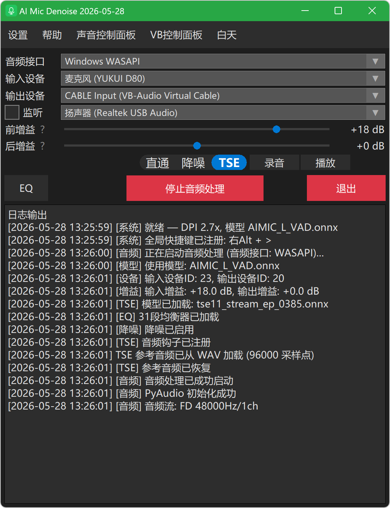

简洁直观的操作界面，支持音频接口选择、设备管理、前后增益调节和10段均衡器
专为直播、录音、会议场景设计的AI降噪解决方案
特别优化CPU占用，即使配置较低的电脑也能流畅运行，CPU占用仅约3%，让您专注于内容创作
专门针对键盘声、鼠标声、电流声、风声等常见噪音优化，有效识别并消除，保留自然人声
开启后3秒内快速学习环境特征，噪音大幅减弱，AI自适应表现，无需手动调整参数
31Hz-16kHz全频段调节，精细调整声音频谱特性，打造专属音色，支持滚轮微调
支持-20dB到+30dB前后增益调节，降噪前后分别控制音量，避免过曝削峰
支持手机/其他设备通过网络输入音频，扫码即可连接，实现远程麦克风降噪
支持开机自动启动并运行，静默启动无打扰，开机即可使用降噪功能
自动保存所有设置，包括设备选择、增益参数、均衡器配置，下次启动自动恢复
经过专业软件工程实践打造
使用Lock和Event机制保护共享状态，多线程环境下稳定运行
职责分离设计，音频控制、系统托盘、注册表管理独立模块
音频处理线程统一管理，资源自动释放，避免内存泄漏
线程安全的环形缓冲区设计，网络音频平滑无卡顿
VB-Cable 是连接降噪软件和其他应用程序的"桥梁"
VBCABLE_Setup_x64.exe，选择以管理员身份运行正确配置软件以实现最佳降噪效果
💡 提示：所有配置会自动保存，下次启动自动恢复
使用手机或其他设备作为音频输入源
🌐 网络音频：支持手机浏览器直接访问，无需安装额外APP
实现开机自动运行，无需每次手动打开软件
取消开机自启：取消勾选"开机自启动"即可删除注册表项
原因：VB-Cable被设为了默认播放设备
解决方案：将音箱/耳机重新设为默认播放设备
请按以下步骤检查：
调整建议：选择增益0dB → 录音听声音大小 → 逐渐增大dB → 直到没有过曝出现削峰的最大值。过曝会有明显的毛糙声。
10段均衡器覆盖31Hz-16kHz频段：
💡 支持鼠标滚轮微调，每次调整0.5dB
排查步骤：